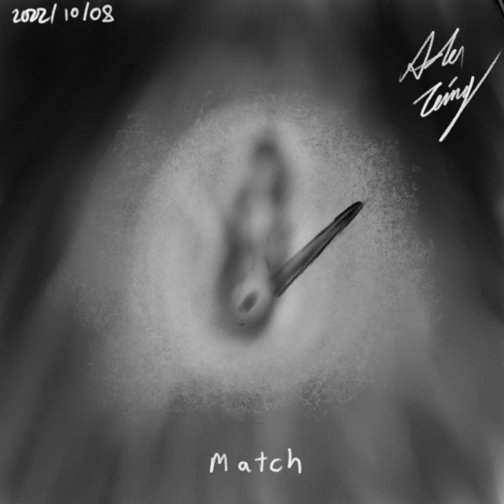

Seventh |
Another Art Piece Using Krita |
|
This is another art piece I made using Krita in the same month as the previous piece. It was for the same art challenge where the theme was "match" Finsihed it in about 2 hours |
Back to Top |